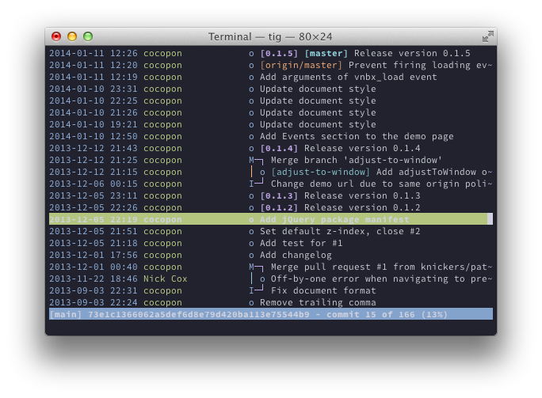
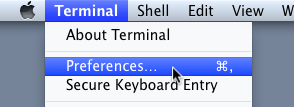
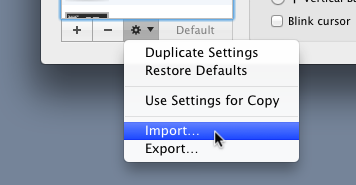

Iceberg is a dark blue color scheme for Vim. It brings a cool-headed perspective for your happy coding
- Eye-friendly dark coloration, designed for GUI version
- Also support 256-colors terminal
Preview
html
1 <!DOCTYPE html>¬2 <html lang="en">¬3 <head>¬4 ▸ <meta charset="UTF-8">¬5 ▸ <meta name="viewport" content="initial-scale=1.0,maximum-scale=1.0,minimum-scale=1.0,user-scalable=no">¬6 ▸ <title>Works - cocopon.me</title>¬7 ▸ <link href="http://fonts.googleapis.com/css?family=Maven+Pro:400,700,900" rel="stylesheet" type="text/css">¬8 ▸ <link rel="stylesheet" href="style.css">¬9 </head>¬10 <body class="non_root work">¬11 ▸ <div id="header">¬12 ▸ ▸ <div class="logo"><a href="index.html"> </a></div>¬13 ▸ ▸ <h1>Works</h1>¬14 ▸ ▸ <ul class="nav">¬15 ▸ ▸ ▸ <li>Works</li><li><a href="history.html">History</a></li><li><a href="about.html">About</a></li>¬16 ▸ ▸ </ul>¬17 ▸ </div>¬18 ▸ <div class="main">¬19 ▸ ▸ <div class="work">¬20 ▸ ▸ ▸ <h2>Cocopon-Note</h2>¬21 ▸ ▸ ▸ <div class="screenshot">¬22 ▸ ▸ ▸ ▸ <a href="blog/" target="_blank">¬23 ▸ ▸ ▸ ▸ ▸ <img src="img/work/blog.png" alt="">¬24 ▸ ▸ ▸ ▸ </a>¬25 ▸ ▸ ▸ </div>¬26 ▸ ▸ ▸ <p>¬27 ▸ ▸ ▸ ▸ Weblog (Japanese)¬28 ▸ ▸ ▸ </p>¬29 ▸ ▸ </div>¬30 ▸ ▸ <div class="work">¬31 ▸ ▸ ▸ <h2>DOTAPON Software</h2>¬32 ▸ ▸ ▸ <div class="screenshot">¬33 ▸ ▸ ▸ ▸ <a href="http://dotapon.sakura.ne.jp/" target="_blank">¬34 ▸ ▸ ▸ ▸ ▸ <img src="img/work/dotapon.png" alt="">¬35 ▸ ▸ ▸ ▸ </a>¬36 ▸ ▸ ▸ </div>¬37 ▸ ▸ ▸ <p>¬38 ▸ ▸ ▸ ▸ One of my website, published some apps¬39 ▸ ▸ ▸ </p>¬40 ▸ ▸ </div>¬41 ▸ ▸ <div class="work">¬42 ▸ ▸ ▸ <h2>Vim Colorscheme Gallery</h2>¬43 ▸ ▸ ▸ <div class="screenshot">¬44 ▸ ▸ ▸ ▸ <a href="http://cocopon.me/app/vim-color-gallery/index.html?welcome=1" target="_blank">¬45 ▸ ▸ ▸ ▸ ▸ <img src="img/history/vim_color_gallery.png" alt="">¬46 ▸ ▸ ▸ ▸ </a>¬47 ▸ ▸ ▸ </div>¬48 ▸ ▸ ▸ <p>¬49 ▸ ▸ ▸ ▸ A gallery of high-quality vim color schemes¬50 ▸ ▸ ▸ </p>¬51 ▸ ▸ </div>¬52 ▸ ▸ <div class="work">¬53 ▸ ▸ ▸ <h2>Googkit</h2>¬54 ▸ ▸ ▸ <div class="screenshot">¬55 ▸ ▸ ▸ ▸ <a href="http://googkit.github.io/googkit/" target="_blank">¬56 ▸ ▸ ▸ ▸ ▸ <img src="img/history/googkit.png" alt="">¬57 ▸ ▸ ▸ ▸ </a>¬58 ▸ ▸ ▸ </div>¬59 ▸ ▸ ▸ <p>¬60 ▸ ▸ ▸ ▸ Boost developing speed of your web app with Google Closure Library¬61 ▸ ▸ ▸ </p>¬62 ▸ ▸ </div>¬63 ▸ ▸ <div class="work">¬64 ▸ ▸ ▸ <h2>Llumino</h2>¬65 ▸ ▸ ▸ <div class="screenshot">¬66 ▸ ▸ ▸ ▸ <a href="http://dotapon.sakura.ne.jp/apps/llumino" target="_blank">¬67 ▸ ▸ ▸ ▸ ▸ <img src="img/history/llumino.png" alt="">¬68 ▸ ▸ ▸ ▸ </a>¬69 ▸ ▸ ▸ </div>¬70 ▸ ▸ ▸ <p>¬71 ▸ ▸ ▸ ▸ Beautiful calculator for iOS¬72 ▸ ▸ ▸ </p>¬73 ▸ ▸ </div>¬74 ▸ ▸ <div class="work">¬75 ▸ ▸ ▸ <h2>Vanillabox</h2>¬76 ▸ ▸ ▸ <div class="screenshot">¬77 ▸ ▸ ▸ ▸ <a href="app/vanillabox/" target="_blank">¬78 ▸ ▸ ▸ ▸ ▸ <img src="img/history/vanillabox.png" alt="">¬79 ▸ ▸ ▸ ▸ </a>¬80 ▸ ▸ ▸ </div>¬81 ▸ ▸ ▸ <p>¬82 ▸ ▸ ▸ ▸ Simple, modern, Lightbox-like plugin for jQuery¬83 ▸ ▸ ▸ </p>¬84 ▸ ▸ </div>¬85 ▸ ▸ <div class="work">¬86 ▸ ▸ ▸ <h2>Tiny iOS</h2>¬87 ▸ ▸ ▸ <div class="screenshot">¬88 ▸ ▸ ▸ ▸ <a href="http://dotapon.sakura.ne.jp/apps/tiny_ios/" target="_blank">¬89 ▸ ▸ ▸ ▸ ▸ <img src="img/history/tiny_ios.png" alt="">¬90 ▸ ▸ ▸ ▸ </a>¬91 ▸ ▸ ▸ </div>¬92 ▸ ▸ ▸ <p>¬93 ▸ ▸ ▸ ▸ Extremely small iPhone running in your browser¬94 ▸ ▸ ▸ </p>¬95 ▸ ▸ </div>¬96 ▸ </div>¬97 ▸ <div id="footer">© 2013 cocopon.</div>¬98 ▸ <script type="text/javascript">¬99 ▸ ▸ var _gaq = _gaq || [];¬100 ▸ ▸ _gaq.push(['_setAccount', 'UA-36472269-1']);¬101 ▸ ▸ _gaq.push(['_trackPageview']);¬102 ¬103 ▸ ▸ (function() {¬104 ▸ ▸ ▸ var ga = document.createElement('script'); ga.type = 'text/javascript'; ga.async = true;¬105 ▸ ▸ ▸ ga.src = ('https:' == document.location.protocol ? 'https://ssl' : 'http://www') + '.google-analytics.com/ga.js';¬106 ▸ ▸ ▸ var s = document.getElementsByTagName('script')[0]; s.parentNode.insertBefore(ga, s);¬107 ▸ ▸ })();¬108 ▸ </script>¬109 </body>¬110 </html>¬
markdown
1 Vanillabox [](https://travis-ci.org/cocopon/vanillabox)¬2 ==========¬3 ¬4 ¬5 Overview¬6 --------¬7 Vanillabox is a simple, modern [Lightbox](http://lokeshdhakar.com/projects/lightbox2/)-like plugin for [jQuery](http://jquery.com/).¬8 You can easily setup your image gallery with this plugin.¬9 ¬10 See the [official page](http://cocopon.me/app/vanillabox/) for more information.¬11 ¬12 ¬13 Why Vanillabox?¬14 ---------------¬15 - Simple design, no decoration. It focuses your content.¬16 - Suitable for modern browsers that include mobile ones.¬17 It works nicely whether or not to zoom a page.¬18 - Free for commercial use.¬19 It's licenced under the [MIT License](http://opensource.org/licenses/MIT).¬20 ¬21 ¬22 System Requirements¬23 -------------------¬24 - jQuery 1.7+¬25 - Chrome, Firefox, Safari, Opera, Internet Explorer 9+,¬26 iOS 6+ (Safari), Android 4.1.2+ (AOSP, Chrome)¬27 ¬28 ¬29 How to Build Your Own Vanillabox¬30 --------------------------------¬31 If you just want to use Vanillabox, get a compressed file from the [official page](http://cocopon.me/app/vanillabox/getting_started.html).¬32 You may not need to perform the following steps.¬33 ¬34 First, these commands are required to setup a development environment:¬35 ¬36 - [Node.js/npm](http://nodejs.org/) 0.10+¬37 - [Ruby/RubyGems](https://www.ruby-lang.org/) 1.8.7+¬38 ¬39 Install gems and npm packages:¬40 ¬41 ```bash¬42 gem install sass -v '>=3.2'¬43 npm install -g grunt-cli¬44 ```¬45 ¬46 You also need to install Closure Compiler to compress JS files:¬47 ¬48 ```bash¬49 git clone https://code.google.com/p/closure-compiler COMPILER_HOME¬50 cd COMPILER_HOME¬51 ant¬52 export COMPILER_PATH=COMPILER_HOME¬53 ```¬54 ¬55 Next, clone the repository and get source files:¬56 ¬57 ```bash¬58 git clone https://github.com/cocopon/vanillabox VANILLA_HOME¬59 ```¬60 ¬61 Then move into the project directory, and run npm to install required npm packages:¬62 ¬63 ```bash¬64 cd VANILLA_HOME¬65 npm install¬66 ```¬67 ¬68 All done!¬69 Now you can use grunt tasks for development.¬70 ¬71 ```bash¬72 grunt compile¬73 ```¬74 ¬75 ¬76 ### Available Grunt Tasks¬77 ¬78 | Command | Description |¬79 | ------------------ | ------------------------------------------ |¬80 | `grunt test` | Runs unit tests |¬81 | `grunt combine` | Generates an uncompressed JS file |¬82 | `grunt sass:theme` | Translates theme SCSS files into CSS files |¬83 | `grunt document` | Generates files for documents |¬84 | `grunt compile` | Compiles JS files |¬85 | `grunt package` | Generates a package archive |¬
php
1 <?php¬2 ¬3 ¬4 add_action('after_setup_theme', 'ccpnnote_setup');¬5 ¬6 ¬7 function ccpnnote_setup() {¬8 ▸ if (function_exists('add_theme_support')) {¬9 ▸ ▸ add_theme_support('automatic-feed-links');¬10 ¬11 ▸ ▸ // Thumbnail¬12 ▸ ▸ add_theme_support('post-thumbnails');¬13 ▸ ▸ set_post_thumbnail_size(200, 150);¬14 ▸ }¬15 ¬16 ▸ if (function_exists('register_nav_menu')) {¬17 ▸ ▸ register_nav_menu('primary', 'Primary Menu');¬18 ▸ }¬19 ¬20 ▸ if (function_exists('register_sidebar')) {¬21 ▸ ▸ register_sidebar(array(¬22 ▸ ▸ ▸ 'before_widget' => '<div class="widget">',¬23 ▸ ▸ ▸ 'after_widget' => '</div>',¬24 ▸ ▸ ▸ 'before_title' => '<h1>',¬25 ▸ ▸ ▸ 'after_title' => '</h1>'¬26 ▸ ▸ ));¬27 ▸ }¬28 }¬29 ¬30 ¬31 function ccpnnote_entry_meta() {¬32 ▸ $date = sprintf('%1$s',¬33 ▸ ▸ esc_html(get_the_date()));¬34 ¬35 ▸ $author_id = get_the_author_meta('ID');¬36 ▸ $author = sprintf('<a href="%1$s">%2$s</a>',¬37 ▸ ▸ esc_url(get_author_posts_url($author_id)),¬38 ▸ ▸ get_the_author());¬39 ¬40 ▸ printf('%1$s, %2$s',¬41 ▸ ▸ $date,¬42 ▸ ▸ $author);¬43 }¬44 ¬45 ¬46 function ccpnnote_breadcrumbs() {¬47 ▸ global $wp_query;¬48 ¬49 ▸ $big = 999999999; // need an unlikely integer¬50 ¬51 ▸ echo paginate_links(array(¬52 ▸ ▸ 'base' => str_replace($big, '%#%', esc_url(get_pagenum_link($big))),¬53 ▸ ▸ 'format' => '?paged=%#%',¬54 ▸ ▸ 'current' => max(1, get_query_var('paged')),¬55 ▸ ▸ 'total' => $wp_query->max_num_pages));¬56 }¬57 ¬58 ¬59 function ccpnnote_hoge() {¬60 ▸ wp_enqueue_script(¬61 ▸ ▸ 'script',¬62 ▸ ▸ get_template_directory_uri() . '/js/script.js',¬63 ▸ ▸ array('jquery'));¬64 }¬65 ¬66 ¬67 add_action('wp_enqueue_scripts', 'ccpnnote_hoge');¬68 ¬69 ¬70 ?>¬
ruby
1 Inkexport.require_local('lib.path')¬2 ¬3 ¬4 module Inkexport¬5 ¬6 ¬7 # An exporter class that exports PNG from target elements.¬8 class Exporter¬9 ▸ DEFAULT_ACTUAL_DPI = 90¬10 ▸ FILE_EXT = '.png'¬11 ¬12 ▸ attr_accessor :output_dir¬13 ¬14 ▸ def initialize(inkscape_path, svg_path)¬15 ▸ ▸ @inkscape_path = Path.escape(inkscape_path)¬16 ▸ ▸ @svg_path = svg_path¬17 ▸ ▸ @output_dir = '.'¬18 ▸ ▸ self.actual_dpi = DEFAULT_ACTUAL_DPI¬19 ▸ end¬20 ¬21 ▸ def actual_dpi()¬22 ▸ ▸ return @actual_dpi¬23 ▸ end¬24 ¬25 ▸ def actual_dpi=(actual_dpi)¬26 ▸ ▸ @actual_dpi = actual_dpi¬27 ▸ ▸ build_dpi_map()¬28 ▸ end¬29 ¬30 ▸ def build_dpi_map()¬31 ▸ ▸ @dpi_map = {@actual_dpi => ''}¬32 ¬33 ▸ ▸ other_scales = [2]¬34 ▸ ▸ other_scales.each do |scale|¬35 ▸ ▸ ▸ @dpi_map[@actual_dpi * scale] = "@#{scale}x"¬36 ▸ ▸ end¬37 ▸ end¬38 ¬39 ▸ # Exports PNGs using specified elements.¬40 ▸ #¬41 ▸ # @param [Array<REXML::Element>] targets¬42 ▸ # The array of target elements to export¬43 ▸ def export_targets(targets)¬44 ▸ ▸ targets.each do |target|¬45 ▸ ▸ ▸ export_target(target)¬46 ▸ ▸ end¬47 ▸ end¬48 ¬49 ▸ private¬50 ¬51 ▸ def export(id, export_path, dpi)¬52 ▸ ▸ args = []¬53 ▸ ▸ args << "#{Path.escape(@svg_path)}"¬54 ▸ ▸ args << "--export-id=#{id}"¬55 ▸ ▸ args << "--export-dpi=#{dpi}"¬56 ▸ ▸ args << "--export-png=#{Path.escape(export_path)}"¬57 ▸ ▸ puts `#{@inkscape_path} #{args.join(' ')}`¬58 ▸ end¬59 ¬60 ▸ def export_target(target)¬61 ▸ ▸ file_name = target.attributes['inkscape:label']¬62 ▸ ▸ if file_name == nil¬63 ▸ ▸ ▸ return¬64 ▸ ▸ end¬65 ¬66 ▸ ▸ @dpi_map.each do |dpi, file_postfix|¬67 ▸ ▸ ▸ export_path = File.join(@output_dir, file_name + file_postfix + FILE_EXT)¬68 ¬69 ▸ ▸ ▸ target_id = target.attributes['id']¬70 ▸ ▸ ▸ export(target_id, export_path, dpi)¬71 ▸ ▸ end¬72 ▸ end¬73 end¬74 ¬75 end¬
vim
1 " __ __ _ _____ _________¬2 " \ \ | |_| V __/ __|¬3 " \ \| | | | | | | | [__¬4 " [_] \___|_|_|_|_|_| \____|¬5 ¬6 ¬7 " Execute the following command to install packages:¬8 "¬9 " ▸:call VimrcInstallPackageManager()¬10 ¬11 ¬12 +-- 47 lines: Required Packages ----------------------------------------------------------------------------------------------------------------59 ¬60 ¬61 " Environment {{{¬62 function! VimrcEnvironment()¬63 ▸ let env = {}¬64 ▸ let env.is_win = has('win32') || has('win64')¬65 ¬66 ▸ let user_dir = env.is_win¬67 ▸ ▸ ▸ ▸ \ ? expand('$VIM/vimfiles')¬68 ▸ ▸ ▸ ▸ \ : expand('~/.vim')¬69 ▸ let env.path = {¬70 ▸ ▸ ▸ ▸ \ ▸'user': user_dir,¬71 ▸ ▸ ▸ ▸ \ ▸'neobundle': user_dir . '/neobundle.vim',¬72 ▸ ▸ ▸ ▸ \ ▸'bundle': user_dir . '/bundle',¬73 ▸ ▸ ▸ ▸ \ ▸'setting': user_dir . '/setting',¬74 ▸ ▸ ▸ ▸ \ ▸'local_vimrc': user_dir . '/.vimrc_local',¬75 ▸ ▸ ▸ ▸ \ ▸'bundle_preset': user_dir . '/bundle-preset.vim',¬76 ▸ ▸ ▸ ▸ \ }¬77 ¬78 ▸ return env¬79 endfunction¬80 ¬81 let s:env = VimrcEnvironment()¬82 " }}}¬83 ¬84 ¬85 " Install {{{¬86 function! s:mkdir_silently(dir)¬87 ▸ if isdirectory(a:dir)¬88 ▸ ▸ return 0¬89 ▸ endif¬90 ¬91 ▸ call mkdir(a:dir, 'p')¬92 ▸ return 1¬93 endfunction¬94 ¬95 function! s:install_packages()¬96 ▸ call s:mkdir_silently(s:env.path.bundle)¬97 ¬98 ▸ if exists(':Unite')¬99 ▸ ▸ Unite neobundle/install:!¬100 ▸ else¬101 ▸ ▸ NeoBundleInstall!¬102 ▸ endif¬103 endfunction¬104 ¬105 function! s:clone_repository(url, local_path)¬106 ▸ if isdirectory(a:local_path)¬107 ▸ ▸ return¬108 ▸ endif¬109 ¬110 ▸ execute printf('!git clone %s %s', a:url, a:local_path)¬111 endfunction¬112 ¬113 function! VimrcInstallPackageManager()¬114 ▸ call s:mkdir_silently(s:env.path.user)¬115 ▸ call s:mkdir_silently(s:env.path.setting)¬116 ¬117 ▸ call s:clone_repository(¬118 ▸ ▸ ▸ ▸ \ 'https://github.com/Shougo/neobundle.vim',¬119 ▸ ▸ ▸ ▸ \ s:env.path.neobundle)¬120 ▸ call s:clone_repository(¬121 ▸ ▸ ▸ ▸ \ 'https://github.com/cocopon/bundle-preset.vim',¬122 ▸ ▸ ▸ ▸ \ s:env.path.bundle_preset)¬123 ¬124 ▸ call s:activate_package_manager()¬125 ¬126 ▸ call s:install_packages()¬127 ¬128 ▸ echo 'Restart vim to finish the installation.'¬129 endfunction¬130 " }}}¬131 ¬132 ¬133 +-- 57 lines: Activate -------------------------------------------------------------------------------------------------------------------------190 ¬191 ¬192 +-- 51 lines: Key ------------------------------------------------------------------------------------------------------------------------------243 ¬244 ¬245 +-- 18 lines: FileType -------------------------------------------------------------------------------------------------------------------------263 ¬264 ¬265 +-- 48 lines: Misc -----------------------------------------------------------------------------------------------------------------------------313 ¬314 ¬315 +--187 lines: Plugins --------------------------------------------------------------------------------------------------------------------------502 ¬503 ¬504 +-- 5 lines: Local Settings -------------------------------------------------------------------------------------------------------------------509 ¬510 ¬511 unlet s:bundle_activated¬512 unlet s:env¬513 unlet s:packages¬
Built with SVSS
Iceberg is built with SVSS, SCSS-like style sheet for Vim. All colors are defined with HSL color space and various color functions provided by SVSS. If you are a web developer/designer and good at SCSS, you can easily create your own color scheme with SVSS.vim. Check it out!
Iceberg for OS X Terminal
Now Iceberg is also available for Terminal.app (Terminal on OS X)!

How to Use
- Right click the above button and then choose "Save Link As..."
-
Open Terminal.app and choose "Terminal > Preferences..."
 -
Click "Settings" tab
-
Click the gear icon in the bottom left and choose "Import..."
 - Open downloaded file
- Enjoy!